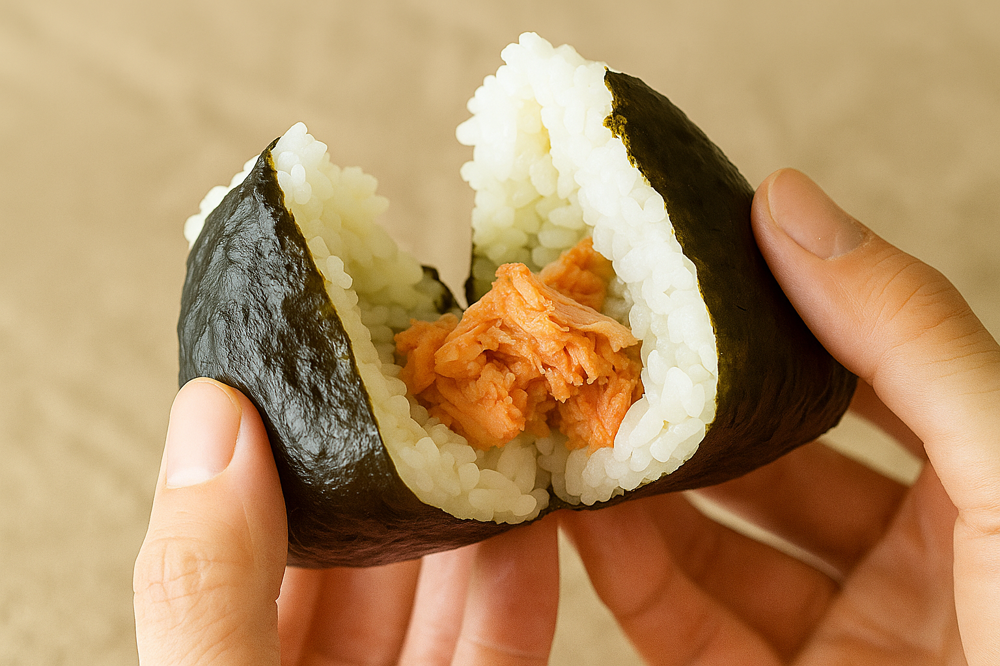
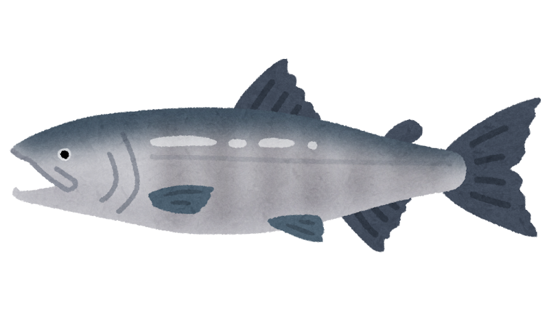

鮭おにぎりの紹介
日本の食卓に欠かせない、シンプルでありながら奥深い味わいの「鮭おにぎり」。
その魅力を、たっぷりとご紹介します。


美味しさの3つの理由
具材
- ほどよい塩気と脂のコクが、ご飯の甘みと相性バツグン
- 焼いたりほぐしたりすることで香ばしさ＆ほろほろ食感に
お米
- 水分をしっかり含んだふっくら炊き上げで、もっちり甘みが感じられる
- 粘りで具材を包み込み、一口で一体感を味わえる
海苔
- 焼き海苔ならではの香ばしい磯の香りがアクセントに
- パリッとした食感で食べ応えをプラス
そして手にくっつかない役割も
鮭おにぎりの歴史
- 古代〜近世: 「おにぎり」と「塩鮭」は、それぞれが携帯食・保存食として長い歴史を歩んできました。
- 昭和53年 (1978年): セブン-イレブンがおにぎりを発売。初期メンバーとして「鮭」を選んだことで、鮭おにぎりは全国区の定番商品となりました。
- 平成〜現代: 技術革新と商品開発により、鮭おにぎりは多様化し、今なおおにぎりの王座に君臨しています。
鮭おにぎりの歴史は、日本の食文化と流通革命が詰まった、まさに「日本のソウルフード」の歴史そのものと言えるでしょう。